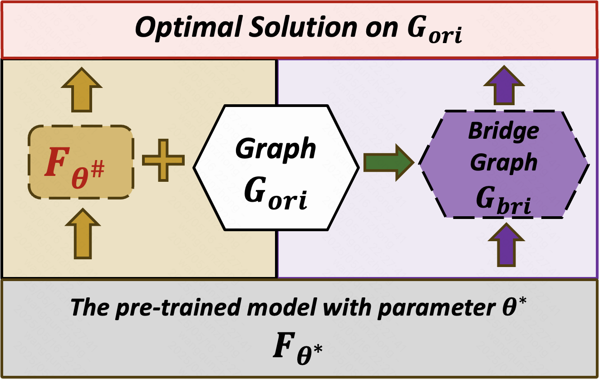

|
Qunzhong Wang(王群中) Hi, I'm Qunzhong Wang. I am currently an undergraduate at the Chinese University of Hong Kong, majoring in Mathematics and Information Engineering. Prior to my undergraduate studies, I received the gold medal in Chinese Mathematical Olympiad. My current research interests include mathematical frameworks for AI analysis, reinforcement learning, especially its behavior on large language models/multimodal large language models. I am seeking potential future research opportunities (virtual or in-person), particularly in LLMs, VLMs, and related fields. You can view my full resume here. |
|
Publications
|  |
Does Graph Prompt Work? A Data Operation Perspective with Theoretical Analysis Qunzhong Wang, Xiangguo Sun, Hong Cheng ICML, 2025 This paper introduces a theoretical framework that rigorously analyzes graph prompting from a data operation perspective. The error lower bound, upper bound, and data distribution have been thoroughly studied. |
Selected Awards
Mathematical Modeling Contest, Meritorious Winner (2024) |
|
Dean’s List, Chinese University of HK (2024) |
|
Soong Ching Ling Scholarship (2023) |
|
Prof Omar Wing Memorial Scholarship (2023) |
|
Simon Marais Mathematics Competition, 11th in East Division (2023) |
|
Admission Scholarship, Chinese University of HK (2023) |
|
China Physics Olympiad (Provincial), First Prize (2022) |
|
China Chemistry Olympiad (Provincial), First Prize (2022) |
|
China Mathematics Olympiad, Gold Medal (2022) |
Internship
|
2024.04—2024.09: Database Research Group, Chinese University of HK, supervised by Prof. Hong Cheng |
|
|
2024.12—Present: Kling AI Technology Department, Kuaishou |